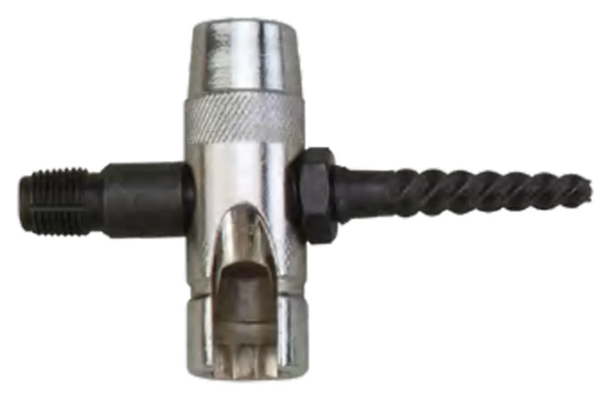

GROZ · Greasing Equipment
Easy Out Tools
CAT NR ESO/2 · ORD NR 44891
| CAT NR (catalogue number) | ESO/2 |
|---|---|
| ORD NR (order number) | 44891 |
| Box quantity | 250 |
| Opens fittings with hex size | 3/8" & 7/16" (11 mm) |
| Tap rethreads | 1/8" - 27 |
| Type | Large |
Open in the catalogue The catalogue PDF, page 86
From the GROZ Fluid Handling CC-07 catalogue. Not yet verified: these details were read from the printed catalogue automatically; check the catalogue page before ordering.